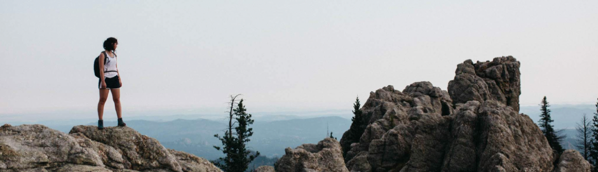

About Me
 Dr. Tri Dev Acharya is currently a Postdoc-Employee at the Institute of Transportation Studies, UC Davis (ITS-Davis)
leading spatial analysis in the Hydrogen Study Group sponsored by various industry partners and UC’s Alliance for Renewable Clean Hydrogen Energy Systems (ARCHES). He collects,
manages, and updates geospatial databases, performs spatial analysis, and produces various maps for the deployment of hydrogen refueling stations and production sites focusing on
land cover/use, parcel size requirements, and suitability analysis within California. With ARCHES, his main task is to evaluate production and demand from various proposals to
maintain the supply chain for the development of a state-wide hydrogen hub. He served as an advisory board member for UC Davis Mentoring Up initiative and is an active mentor for
Graduate Students of Color(GSoC) for the Cross Culture Center(CCC).
Dr. Acharya received his B.E. degree in geomatics from Kathmandu University, Nepal, in 2011
and a combined M.S. and Ph.D. degree from the Department of Civil Engineering, Kangwon National University, Korea, in 2018.
Prior to ITS, he worked as a postdoctoral researcher in Korea and China, focusing on geospatial data preparation, modeling, and
simulation of land cover, surface water, disasters, and transportation. Outside UC Davis, he volunteers as a technical advisor
for engineering firms and is highly active in mentoring, training, and promoting geospatial and overall STEM domains
via #Mentor4Nepal Initiative.